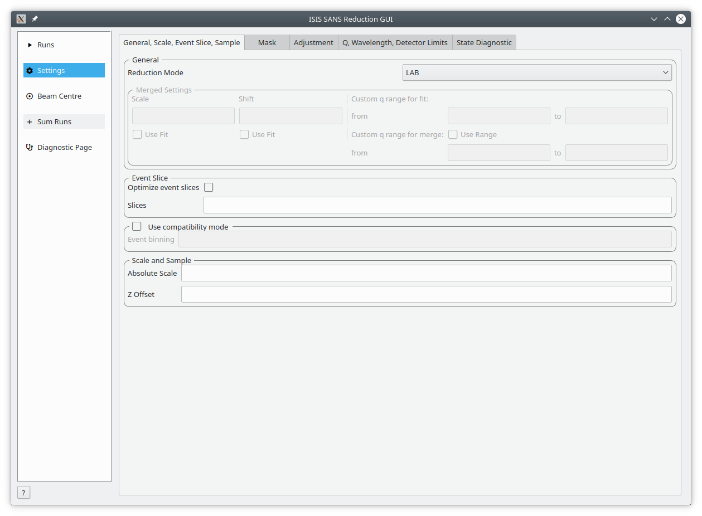
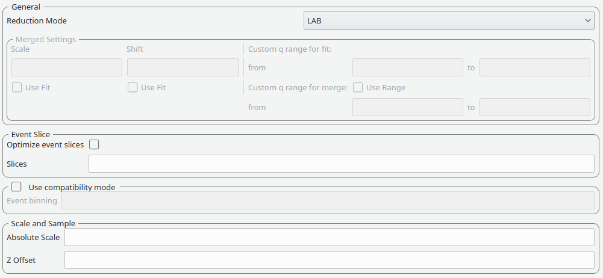
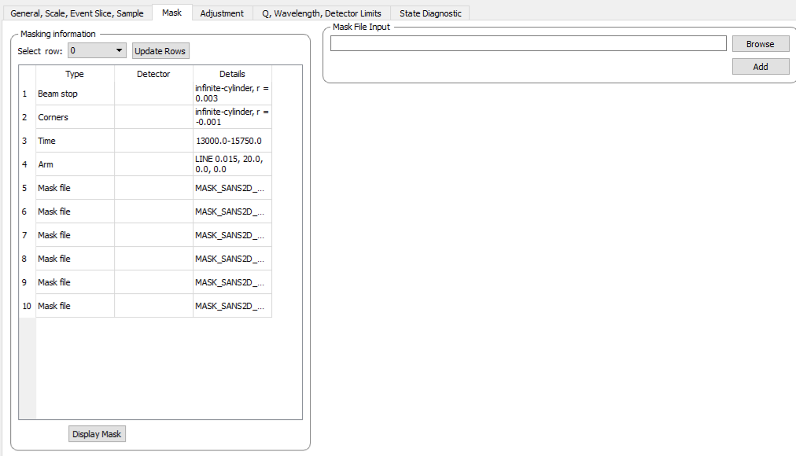
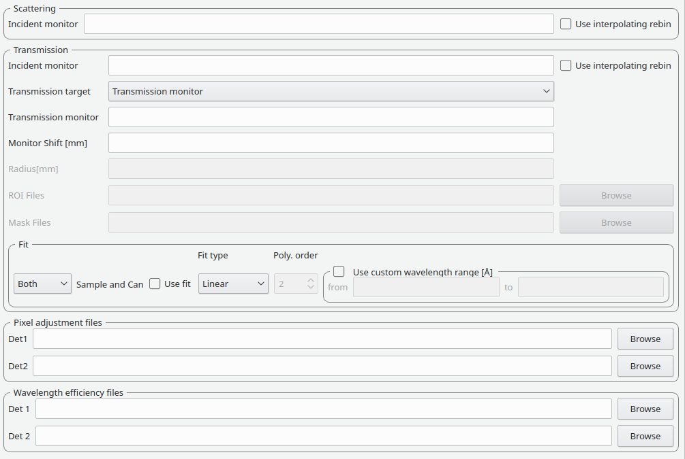
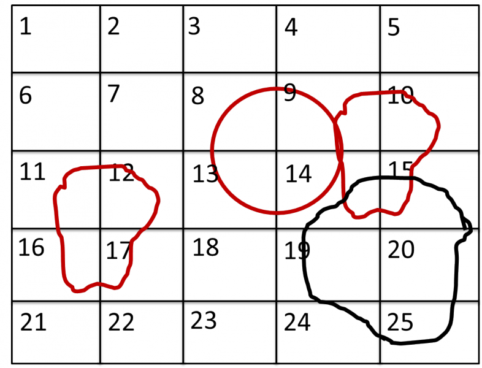
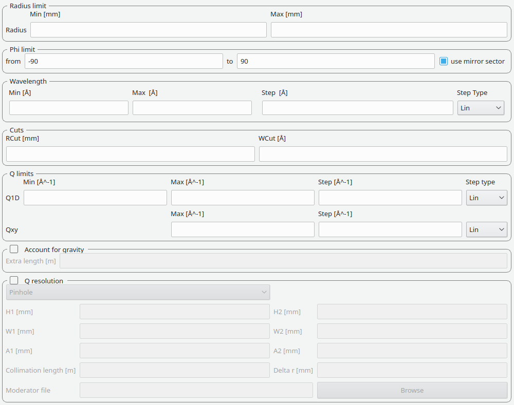
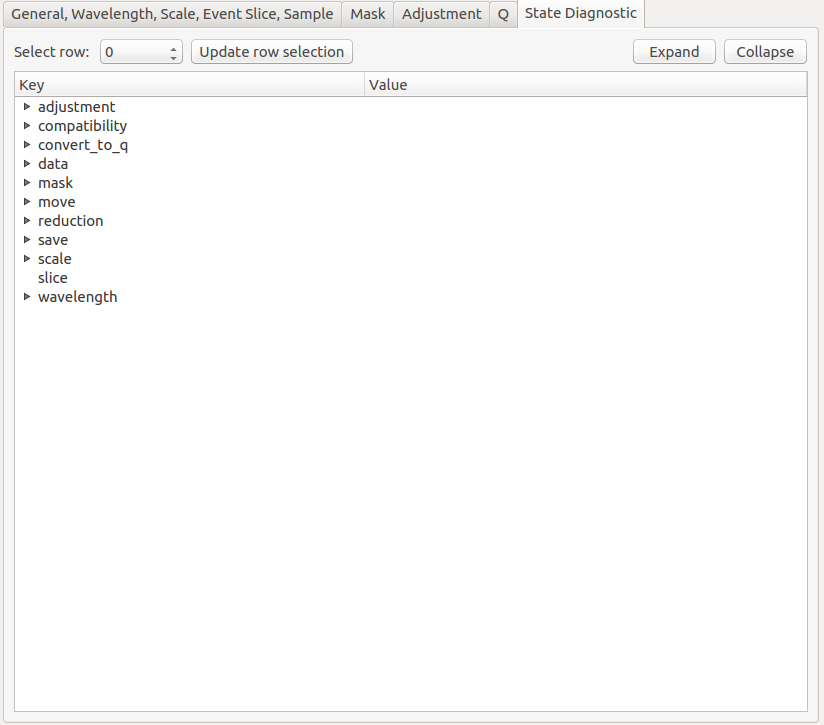

Settings#
{kind=link}

The Settings tab and its sub-tabs allow users to control the parameters used for processing data. These values are initially from the specified user file.
General, Scale, Event Slice, Sample This tab includes settings on how to process merged runs, event slices, event binning and scale and z offset.
Mask The mask tab contains a table of masks specified in the user file.
Adjustment This tab controls the parameters used when generating adjustment workspaces. This includes monitor normalization, transmission calculation, pixel-adjustment files and wavelength-adjustment files.
Q, Wavelength, Detector Limits This tab contains settings for the radius limit, phi limit, wavelength range and binning, any cuts to apply, Q limits and binning, extra gravity length and Q resolution.
State Diagnostic (Experimental) The tab provides insight into the state which is being passed to the reduction algorithm. This interface can be removed in future releases without notice.
General, Wavelength, Scale, Event Slice, Sample#
General#
{kind=link}

Reduction mode |
The user can choose to either perform a reduction on the low angle bank (LAB), the high angle bank (HAB), both (Both) or merged (Merged) When merged reduction are selected, additional further settings are required (see below) |
Merge scale |
Sets the scale of a merged reduction. If the Fit check-box is enabled, then this scale is being fitted |
Merge shift |
Sets the shift of a merged reduction. If the Fit check-box is enabled, then this shift is also fitted |
Merge fit custom q range |
Describes the Q region which should be used to determine the merge parameters |
Merge custom q range |
Describes the Q region in which the merged data should be used. Outside of this region the uncombined HAB or LAB data is used |
Event Slice#
Used for data capture in event-mode, it is possible to perform time-of-flight slices of the data and reduce these separately. The input can be:
start:step:stopspecifies time slices from astartvalue for thestopvalue in steps ofstep.start-stopwhich specifies a time slice from thestartvalue to thestopvalue.>startspecifies a slice form thestartvalue to the end of the data set.<stopspecifies a slice form the start of the data set to thestopvalue
In addition it is possible to concatenate these specifications using comma-separation. An example would be 8-10,12:2:16,20-22, which would use 8, 9, 10, 12, 14, 16, 20, 21, 22.
Compatibility Mode#
The previous SANS GUI converted event-mode data to histogram-mode early into processing. This used the time-of-flight binning parameters specified by the user or copied the monitor binning.
The new SANS GUI preserves data in event-mode data until the conversion to momentum transfer. This reduces the processing error in the final results. However, if a user wishes to compare the results with older version of Mantid they are advised to enable compatibility mode.
When compatibility mode is enabled, any time-of-flight binning parameters are taken from the Event binning input. If these are not set, then binning parameters are taken from the monitor workspace.
Scale and Sample#
This grouping allows the user to specify the absolute scale and sample geometry information. Note that the geometry information is in millimetres.
Absolute scale |
The absolute, dimensionless scale factor. |
Z offset |
The sample offset. |
Mask#
{kind=link}

The elements on this tab control the masking step during processing.
Masking information#
The masking table shows detailed information about the masks that will be applied. If a mask is applied only to a particular detector then this will be shown in the masking table. Note that data needs to be specified in order to see the masking information.
Also note any manual changes to the data table or other settings, requires you to update the row selection by pressing Update Rows.
Table |
The masking table which displays all masks which will be applied to the data set. |
Select row |
The masking information is shown for a particular data set in in the data table. The information for the selected row is shown. |
Update rows |
Press this button if you have manually updated the mask table. These changes are currently not picked up automatically. |
Adjustment#
{kind=link}

This tab provides settings which are required for the creation of the adjustment workspaces. These adjustments include monitor normalization, transmission calculation and the application of adjustment files.
Monitor normalization#
Incident monitor |
The incident monitor spectrum number. |
Use interpolating rebin |
Check if an interpolating rebin should be used instead of a normal rebin. |
Transmission calculation#
The main inputs for the transmission calculation are concerned with the incident monitor, the monitors/detectors which measure the transmission and the fit parameters for the transmission calculation.
Incident monitor#
Incident monitor |
The incident monitor spectrum number. |
Use interpolating rebin |
Check if an interpolating rebin should be used instead of a normal rebin. |
Transmission targets#
Transmission targets |
This combo box allows the user to select the transmission target. Transmission monitor will take the transmission data from the monitor which has been selected in the Transmission monitor field. Region of interest on bank will take the transmission data from the fields Radius, ROI files and Mask files. |
Transmission monitor |
The monitor which will be used for the transmission calculation. |
M4 shift |
An optional shift for the M4 monitor. |
Radius |
This will select all detectors in the specified radius around the beam centre to contribute to the transmission data. |
ROI files |
A comma-separated list of paths to ROI files. The detectors specified in the ROI files contribute to the transmission data. |
Mask files |
A comma-separated list of paths to Mask files. The detectors specified in the Mask files are excluded from the transmission data. |
Wide Angle Correction |
Check to perform wide angle correction to the transmission spectra to account for the larger neutron path at larger detection angles. |
Additional information:
As mentioned above the transmission target can be a monitor (e.g. M3 or M4) or a region of interest on the detector bank itself.
If the preferred target is a selection of pixels on the detector bank itself, then the user can specify a region of interest. The pixels in the region of interest contribute to the transmission calculation. There are several ways to specify the region of interest:
Radius: A radius in mm with its centre at the beam centre can be specified. Pixels in this radius are added to the region of interest.
A list of Region-Of-Interest files (ROI files) can be specified. The ROI file is equivalent to a mask file created in the Instrument View Window.
The combination of both methods can also be specified. This results in the union of all relevant pixels. In order to avoid certain areas on the detector, a list of Mask-files can be specified. The Mask file is equivalent to a mask file created in the Instrument View Window.
Note: This mask file is only used for the transmission calculation.
The most general selection on the detector bank will be a specified radius, a list of ROI files and a list of Mask files. Note that individual pixels which are specified by either the radius setting or a ROI file and at the same time by the Mask file, will not be considered for the transmission calculation.
The following example/image should help to clarify the selection process:
{kind=link}

The radius selection (red) picks pixels 8, 9, 13 and14. The ROI files (red) select pixels 9, 10, 11, 12, 14, 15, 16 and 17. This means pixels 8 to 17 are selected.
The Mask file (black) selects pixels 14, 15, 19, 20, 24 and 25. This means that pixels 14 and 15 are dropped and pixels 8, 9, 10, 11, 12, 13, 16 and 17 are being used in the final transmission calculation.
Fit settings#
|
|||
Use fit |
If fitting should be used for the transmission calculation. |
||
Fit type |
The type of fitting for the transmission calculation This can be Linear, Logarithmic or Polynomial. |
||
Polynomal order |
If Polynomial has been chosen in the Fit type input, then the polynomial order of the fit can be set here. |
||
Custom wavelength |
A custom wavelength range for the fit can be specified here. |
||
Show Transmission |
Controls whether the transmission workspaces are output during reduction. |
||
Adjustment files#
Pixel adjustment det 1 |
File name of the pixel adjustment file for the first detector. The file to be loaded is a ‘flat cell’ (flood source) calibration file containing the relative efficiency of individual detector pixels. Note that the numbers in this file include solid angle corrections for the sample-detector distance at which the flood field was measured. On SANS2D this flood field data is then rescaled for whatever sample-detector distance the experimental data was collected at. This file must be in the RKH format and the first column a spectrum number. |
Pixel adjustment det 2 |
File name of the pixel adjustment file for the second detector. See more information above. |
Wavelength adjustment det 1 |
File name of the wavelength adjustment file for the first detector. The content specifies the detector efficiency ratio vs. wavelength. These files must be in the RKH format. |
Wavelength adjustment det 2 |
File name of the wavelength adjustment file for the second detector. See more information above. |
Q, Wavelength and Detector Limits#
{kind=link}

Phi limit#
This group allows the user to specify either an angle (pizza-slice) mask or a series of angles. The angles
are in degree. The method of slicing the angle is selected with the PhiSlicing type combo box. If MinMax is selected,
a start and stop angle cut the slice. If Pairs is selected, a series of phi values can be introduced in pairs, separating
each angle by a comma.
Start angle |
The starting angle. |
Stop angle |
The stop angle. |
Use mirror |
If the mirror sector should be used. |
Ranges |
A set of phi ranges. This option only
appears if a |
Radius limit#
These settings allow for a hollow cylinder mask. The Min entry is the inner radius and the Max entry is the outer radius of the hollow cylinder.
Wavelength#
The settings provide the binning for the conversion from time-of-flight units to wavelength units. Note that all units are Angstrom. Depending on which Step type you have chosen you will be asked to enter either a Max and Min wavelength value between which to do the reduction or to specify a set of wavelength ranges to reduce between. The syntax for the latter case is the same as that used to specify event slices and is
start:step:stopspecifies wavelength slices from astartvalue for thestopvalue in steps of step.start-stopwhich specifies a wavelength slice from thestartvalue to thestopvalue.>startspecifies a slice from thestartvalue to the end of the data set.<stopspecifies a slice from the start of the data set to thestopvalue
In addition it is possible to concatenate these specifications using comma-separation.
An example would be 5-10,12:2:16,20-30.
Min |
The lower bound of the wavelength bins. |
Max |
The upper bound of the wavelength bins. |
Step |
The step of the wavelength bins. |
Step type |
The step type of the wavelength bins, i.e. linear, logarithmic range linear or ranged logarithmic. |
Ranges |
A set of wavelength ranges. This option only appears if a range step type is selected. |
Cuts#
These allow radius and wavelength cuts to be set. They are passed to Q1D as the RadiusCut and WaveCut respectively.
Q limits#
The entries here allow for the providing the binning settings during the momentum transfer conversion. In the case of a 1D reduction the user can specify standard bin information. In the case of a 2D reduction the user can only specify the maximal momentum transfer value, as well as the step size and the step type.
1D settings |
The 1D settings will be used if the reduction dimensionality has been set to 1D. The user can specify the start, stop, step size and step type of the momentum transfer bins. |
2D settings |
The 2D settings will be used if the reduction dimensionality has been set to 2D. The user can specify the stop value, step size and step type of the momentum transfer bins. The start value is 0. Note that the binning is same for both dimensions. |
Gravity correction#
Enabling the check-box will enable the gravity correction. In this case an additional length can be specified.
Q Resolution#
If you want to perform a momentum transfer resolution calculation then enable the check-box of this group. For detailed information please refer to TOFSANSResolutionByPixel.
Aperture type |
The aperture for the momentum transfer resolution calculation can either be Circular or Rectangular. |
Settings for rectangular aperture |
If the Rectangular aperture has been selected, then fields H1 (source height), W1 (source width), H2 (sample height) and W2 (sample width) will have to be provided. |
Settings for circular aperture |
If the Circular aperture has been selected, then fields A1 (source diameter) and A2 (sample diameter) will have to be provided. |
Collimation length |
The collimation length. |
Moderator file |
This file contains the moderator time spread as a function of wavelength. |
Delta r |
The virtual ring width on the detector. |
State Diagnostic#
{kind=link}

This tab only exits for diagnostic purposes and might be removed (or hidden) when the GUI has reached maturity. The interface allows instrument scientists and developers to inspect all settings in one place and check for potential inconsistencies. The settings are presented in a tree view which reflects the hierarchical nature of the SANS state implementation of the reduction back-end.
To inspect the reduction settings for a particular data set it is necessary to press the Update rows button to ensure that the most recent setting changes have been captured. Then the desired row can be selected from the drop-down menu. The result will be displayed in the tree view.
Note that the settings are logically grouped by significant stages in the reduction. On a high level these are:
adjustment |
This group has four sub-groups: calculate_transmission, normalize_to_monitor, wavelength_and_pixel_adjustment and wide_angle_correction. calculate_transmission contains information regarding the transmission calculation, e.g. the transmission monitor. normalize_to_monitor contains information regarding the monitor normalization, e.g. the incident monitor. wavelength_and_pixel_adjustment contains information required to generate the wavelength- and pixel-adjustment workspaces, e.g. the adjustment files. wide_angle_correction contains information if the wide angle correction should be used. |
||
compatibility |
This group contains information for the compatibility mode, e.g. the time-of-flight binning. |
||
convert_to_q |
This group contains information for the momentum transfer conversion, e.g. the momentum transfer binning information. |
||
data |
This group contains information about the data which is to be reduced. |
||
mask |
This group contains information about masking, e.g. the mask files |
||
move |
This group contains information about the position of the instrument. This is for example used when a data set is being loaded. |
||
reduction |
This group contains general reduction information, e.g. the reduction dimensionality. |
||
save |
This group contains information about how the data should be saved, e.g. the file formats. |
||
scale |
This group contains information about the absolute scaling and the volume scaling of the data set. This means it contains the information for the sample geometry. |
||
slice |
This group contains information about event slicing. |
||
wavelength |
This group contains information about the wavelength conversion. |
||